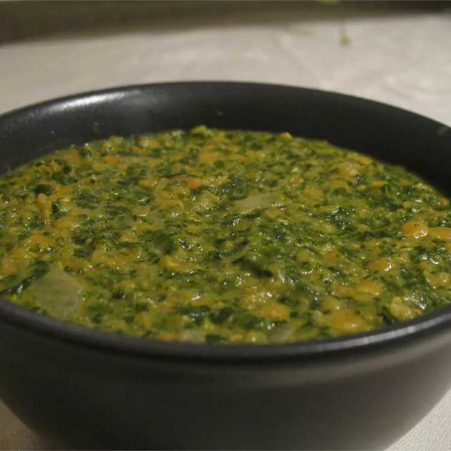

Dahl with Spinach

Description
This is a very yummy, authentic dal. For variation, add coconut milk towards the end of cooking. Freezes well.
Ingredients
- 1 ½ cups red lentils
- 3 ½ cups water
- ½ teaspoon salt
- ½ teaspoon ground turmeric
- ½ teaspoon chili powder
- 1 pound spinach, rinsed and chopped
- 2 tablespoons butter
- 1 onion, chopped
- 1 teaspoon ground cumin
- 1 teaspoon mustard seed
- 1 teaspoon garam masala
- ½ cup coconut milk
Steps
- Rinse lentils and soak for 20 minutes.
- In a large saucepan, bring water to a boil and stir in salt, lentils, turmeric and chili powder. Cover and
return to a boil, then reduce heat to low and simmer for 15 minutes. Stir in the spinach and cook 5 minutes, or
untillentils are soft. Add more water if necessary.
- In a small saucepan over medium heat, melt butter and saute onions with cumin and mustard seeds, stirring
often. Cook until onions are transparent, and then combine with lentils. Stir in garam masala and coconut milk and
cook until heated through.